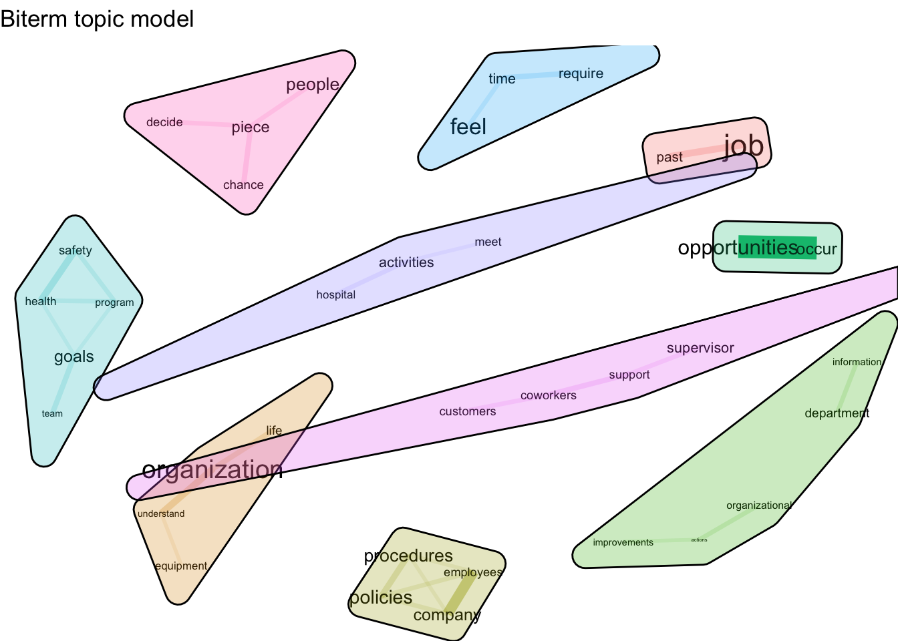

Biterm Modeling of Performance Scales
A summary of our approach to using BTM to uncover the themes of job performance scales.
R text analysis topic models BTM bitermsAbout BTM
Biterm Topic Modeling (BTM) is a method of detecting the topics occurring in short texts. In other approaches to topic modeling, each document is analyzed for topic occurences within that document. The challenge with applying traditional topic modeling techniques to short documents is that there is not enough data to work with. BTM solves this problem by analyzing the entire corpus of documents together.
BTM works by colleting information about biterms in the document corpus. A "biterm" is an unordered co-occurence of words.
Our data consists of individual items taken from performance evaluation scales. Since each item is the length of a sentence, we decided it would be appropriate to apply BTM to our data. We hope to uncover common topics in performance scales using BTM techniques.
Methods
Here the model is defined. We kept the alpha and beta parameters standard to maintain a balance in the output between the number, specificity, and type of the topics. K was set to 10 to indicate that 10 topics should be identified.
## Biterm Topic Model
## trained with 1000 Gibbs iterations, alpha: 5, beta: 0.1
## topics: 10
## size of the token vocabulary: 2118
## topic distribution theta: 0.158 0.101 0.095 0.106 0.109 0.074 0.084 0.063 0.109 0.101#terms(model,type = "biterms")
terms(model)## [[1]]
## token probability
## 1 job 0.13073644
## 2 feel 0.03699595
## 3 people 0.02568620
## 4 skills 0.01720388
## 5 chance 0.01394145
##
## [[2]]
## token probability
## 1 life 0.02596582
## 2 plan 0.02563335
## 3 related 0.02363854
## 4 job 0.01998138
## 5 family 0.01831904
##
## [[3]]
## token probability
## 1 receive 0.02496664
## 2 customer 0.01899712
## 3 customers 0.01759253
## 4 information 0.01548564
## 5 clients 0.01513449
##
## [[4]]
## token probability
## 1 organization 0.09390606
## 2 feel 0.04649472
## 3 life 0.01741577
## 4 leave 0.01646754
## 5 personal 0.01646754
##
## [[5]]
## token probability
## 1 job 0.05913113
## 2 performance 0.05201436
## 3 supervisor 0.02230955
## 4 management 0.01704932
## 5 feedback 0.01643047
##
## [[6]]
## token probability
## 1 job 0.04659101
## 2 company 0.02708573
## 3 policies 0.02575583
## 4 social 0.02176611
## 5 employees 0.01821970
##
## [[7]]
## token probability
## 1 goals 0.03726781
## 2 health 0.02276824
## 3 safety 0.01884944
## 4 program 0.01610628
## 5 team 0.01571440
##
## [[8]]
## token probability
## 1 job 0.06395172
## 2 time 0.05786591
## 3 past 0.03250837
## 4 require 0.02236535
## 5 months 0.01475809
##
## [[9]]
## token probability
## 1 people 0.03209199
## 2 procedures 0.02469326
## 3 job 0.02191874
## 4 policies 0.01482829
## 5 person 0.01421173
##
## [[10]]
## token probability
## 1 opportunities 0.06929877
## 2 job 0.04654001
## 3 occur 0.04456099
## 4 organization 0.03664490
## 5 performing 0.03202718Output
The model uncovers and organizes the topics inferred from the document corpus. The shapes represent topics, and terms are displayed within corresponding topic. The lines connecting terms represent the degree to which the terms occur together. Some of the themes that occur involve procedures and policies, pay, objectives, time, relationships, health and safety, and life.
These themes can help us begin to understand the components of performance. Understanding the essence of performance is an important step in improving performance, which could increase both productivity and satisfaction. 